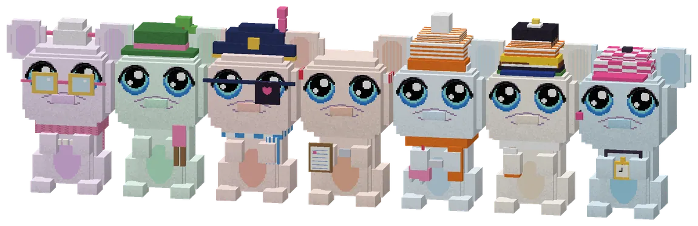
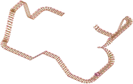
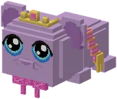
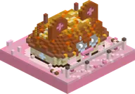
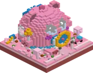
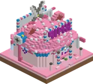
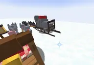

All minigamesAlle minigames
All the games: the classics, the Knuffeldal games, the Grote Guhspelen and the games from the guh stories.
Alle spelletjes: de klassiekers, de Knuffeldal-spelletjes, De Grote Guhspelen en de spellen uit de guhverhalen.
Seven new minigames in the Guhmension, each in its own big guh building with its own guh, its own tickets and an outfit you can only get there. You never need to bring anything: the guh lends you what you need. Every game has a floating top 3 of the world and keeps your personal record (all of them together in the Guhdex in the tab Minigames, and with makkelijk, medium and lastig; the rewards went up too, see ). The super compass (Minigames) finds them all. Plus three very rare places to discover (Wonders / Adventure).
Zeven nieuwe minigames in de Guhmensie, elk in een eigen groot guhgebouw met een eigen guh, eigen tickets en een pakje dat je alleen daar krijgt. Je hoeft nooit iets mee te nemen: de guh leent je wat je nodig hebt. Elk spel heeft een zwevende top 3 van de wereld en onthoudt je eigen record (allemaal bij elkaar in de Guhdex in het tabblad Minigames, en met makkelijk, medium en lastig; de beloningen gingen ook omhoog, zie ). Het superkompas (Minigames) vindt ze allemaal. En drie heel zeldzame plekken om te ontdekken (Wonderen / Avontuur).

Seven game guhsZeven spelletjesguhs
From left to right: Opoe Njegschuif (sjoelen, golden glasses and a knitted shawl), Meneer Vadskronkel (the maze, a gardener's hat and hedge clippers), Kapitein Floepguh (the catapult, a bicorne with a wiggling feather and a heart eye patch), Juf Vahoegsakee (the Knabbelspelen, a sweatband, a whistle and a clipboard), Schaatsmeester Guhglij (the Elf-Guhjestocht), a Stempelguh (one in every village of the tour) and Coach Vahoegvroem (the circuit, a chequered cap, a headset and a golden stopwatch). Each has a Guhdex page and a lot to say, full of njeg and VAHOEG. Every game building is protected, and nobody gets hurt or hungry while playing.
Van links naar rechts: Opoe Njegschuif (sjoelen, gouden brilletje en een gebreide omslagdoek), Meneer Vadskronkel (het doolhof, een tuinmanshoed en een heggenschaar), Kapitein Floepguh (de katapult, een steek met een wiebelende veer en een hartjesooglapje), Juf Vahoegsakee (de Knabbelspelen, een zweetbandje, een fluitje en een klembord), Schaatsmeester Guhglij (de Elf-Guhjestocht), een Stempelguh (in elk dorp van de tocht één) en Coach Vahoegvroem (het circuit, een geblokt petje, een headset en een gouden stopwatch). Elk heeft een Guhdex-pagina en heel veel te vertellen, vol njeg en VAHOEG. Elk spelgebouw is beschermd, en tijdens het spelen krijgt niemand pijn of honger.
| NameNaam | KindSoort | GroupGroep | AboutOver | |
|---|---|---|---|---|
 | Hide-and-guhVerstopguh | Minigame | ClassicsKlassiekers | Find little guhs hidden in Verstopguhtje's house, in three difficulties.Zoek kleine guhs in het huis van Verstopguhtje, in drie moeilijkheden. |
 | The guh fairDe guhkermis | Minigame | ClassicsKlassiekers | A roller coaster full of vads drops and guh corkscrews: every ride earns a kermis ticket.Een achtbaan vol vadsdrops en guhkurkentrekkers: elk rondje een kermisbon. |
 | The Vads contestDe Vads-wedstrijd | Minigame | ClassicsKlassiekers | Dress up a model guh for the theme and let the jury of the Guh Beauty Theater judge.Kleed een modelguh aan voor het thema en laat de jury van het Guh Beauty Theater oordelen. |
 | Guh raceGuhrace | Minigame | ClassicsKlassiekers | Three laps on a rented race guh, through the rings and against your own record ghost.Drie rondjes op een huur-renguh, door de ringen en tegen je eigen recordgeest. |
 | Mika whackingMika meppen | Minigame | ClassicsKlassiekers | Whack the Mikas on the 4x4 board, but never the guh!Mep de Mika's op het 4x4-bord, maar nooit de guh! |
 | The Guh discoDe Guhdisco | Minigame | ClassicsKlassiekers | Dance 'Simon says' to the beat of four songs with the DJ guh.Dans 'Simon zegt' op de beat van vier liedjes bij de DJ-guh. |
 | Guh golfGuhgolf | Minigame | ClassicsKlassiekers | Nine holes of mini golf with three tees per hole.Negen holes minigolf met drie afslagmatjes per hole. |
 | The Vadsig food festivalHet Vadsig eetfestijn | Minigame | ClassicsKlassiekers | Catch the falling food with the Smulguh's bowl for a minute, and stay away from Mika fat.Vang een minuut lang het vallende eten met de schaal van de Smulguh, en blijf weg van Mika-vet. |
 | The guh fish contestDe Guhvis-wedstrijd | Minigame | ClassicsKlassiekers | Catch as many (and as heavy) fish as you can at the Visguh's pond; you keep the special guh fish.Vis zo veel (en zo zwaar) mogelijk bij de Visguh; de bijzondere guhvissen mag je houden. |
 | Guh shuffleboardGuh-sjoelen | Minigame | The Grote GuhspelenDe Grote Guhspelen | Slide twenty pucks with Opoe Njegschuif in the Sjoelhuisje.Twintig schijfjes sjoelen bij Opoe Njegschuif in het Sjoelhuisje. |
 | The guh mazeHet Guhdoolhof | Minigame | The Grote GuhspelenDe Grote Guhspelen | A hedge maze that is different every time: find the hidden knabbels before the hedge Mikas do.Een heggendoolhof dat elke keer anders is: vind de verstopte knabbels voor de Heg-Mika's ze pakken. |
 | The knabbel catapultDe Knabbelkatapult | Minigame | The Grote GuhspelenDe Grote Guhspelen | Fire fluff balls at twelve Mika forts with Captain Floepguh.Schiet pluisballen op twaalf Mika-forten met Kapitein Floepguh. |
 | The great six-event gamesDe Grote Zeskamp | Minigame | The Grote GuhspelenDe Grote Guhspelen | Six games around the circus tent of De Knabbelspelen, refereed by Juf Vahoegsakee.Zes spelletjes rond de circustent van De Knabbelspelen, met Juf Vahoegsakee als scheidsrechter. |
 | The eleven-guh tourDe Elf-Guhjestocht | Minigame | The Grote GuhspelenDe Grote Guhspelen | A skating tour on a frozen canal past eleven villages in the Guhpolder: collect all eleven stamps.Een schaatstocht over een bevroren kanaal langs elf dorpjes in de Guhpolder: haal alle elf stempels. |
 | The guh circuitHet Guh-Circuit | Minigame | The Grote GuhspelenDe Grote Guhspelen | Racing on three tracks (Regenboogbaan, Vadsbaan, Kaasbergbaan) with Coach Vahoegvroem.Racen op drie banen (Regenboogbaan, Vadsbaan, Kaasbergbaan) met Coach Vahoegvroem. |
 | Baking knabbelsKnabbels bakken | Minigame | Knuffeldal | Help Baker Korstje in the Knabbelbakkerij: bake what the customers want.Help Bakker Korstje in de Knabbelbakkerij: bak wat de klantjes willen. |
 | The cuddle crecheDe Knuffelcreche | Minigame | Knuffeldal | Bring the babyguhtjes that crawled away back to Juf Knuffel.Breng de weggekropen babyguhtjes terug naar Juf Knuffel. |
 | The hairdresser showDe kappersshow | Minigame | Knuffeldal | Cut, curl and blow-dry guhs with Kapper Krulletje in Knip & Vads.Knip, krul en föhn guhs bij Kapper Krulletje in Knip & Vads. |
 | The Knuffelbad slidesDe glijbanen van het Knuffelbad | Minigame | Knuffeldal | Three big water slides (Roze Trechter, Glimtunnel and Grote Plons) in the pool by the guh sea.Drie grote glijbanen (Roze Trechter, Glimtunnel en Grote Plons) in het zwembad aan de guhzee. |
 | The Nomguh sled sprintDe Nomguh-sledesprint | Minigame | Guh storiesGuhverhalen | A sled sprint through the snow against Steele-Mika, after the Nomguh story.Een sledesprint door de sneeuw tegen Steele-Mika, na het verhaal van Nomguh. |
 | SurfingSurfen | Minigame | Guh storiesGuhverhalen | Surf the waves of the Guhwai'i surf beach with Lilo-guh.Surf met Lilo-guh over de golven van het surfstrand van Guhwai'i. |
 | Hula | Minigame | Guh storiesGuhverhalen | Dance the hula on the Guhwai'i beach: pick a song and follow the steps.Dans de hula op het strand van Guhwai'i: kies een liedje en volg de pasjes. |